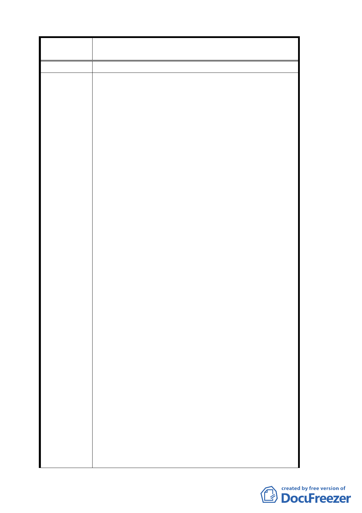

案 名 變更臺北市文山區指南里、老泉里部分保護區為休閒
產業特定專用區都市計畫案
閒空間。
1.1 本計畫若經通過實施後，除因經營休閒產業使用
之土地或建物需依法變更用途外，其他未變更用
途之農舍或農地應可繼續維持農業使用，以保有
地方產業特色與農業風貌。
1.2 有關單位應將休閒產業之土地或建物與作農業用
途之土地或建物加以分離，並同意依實際經營情
形同意加以分割、分別計算相關賦稅，以兼顧地
方特色、農業發展及農民之權益。
1.3 應比照保護區變更為住宅區時，農地處分如仍繼
續作農業使用時，則可免稅。
2.1 改善之內容、標準除採目前公告之形式外，更應以
其他更具體、積極之方式充分告知民眾，方便民
眾表示意見。（如增加公告處所、分發說明書件、
基層行政系統宣達等方式）
2.2 對於進行相關工程所需之經費，請事先提供必需改
善之內容、項目（如建物外觀、污水、廢棄物處
理設備、水土保持工程、交通停車設施等）及其
建議辦法
經費需求估算，以利經營者評估改善之經濟效益。
2.3 改善規範與經營者之期待產生過大之落差，將產生
日後特定專用區推動時之成功與否及經營者之意
願。
2.4 特定專用區內建物屋頂使用之建材，增加「瓦形鍍
鋅鋼板」。
3.1 建議考量酌予延長。
3.2 建議市府有關單位編列預算，以不同階段、不同標
準之方式獎勵經營者儘速推動相關改善工作，使
本區提前展現新風貌，嘉惠廣大從事遊憩活動之
民眾。
4.1 區內坡度三○度以上不可建築之農地，應予免稅。
5.1 綜觀本計畫案，除劃定專用區外，需要當地民眾配
合改善事項仍十分繁瑣，諸如建物改善、經營者
用地取得、經營者經營成本等因素，將影響日後
計畫推動之成敗。
5.2 若市府能以廣大市民、遊憩民眾創造綠色休憩空間
為計畫思考之出發點，而以合理價格進行「區段
徵收」之方式，應可較容易達到整體規劃之目的。
一二